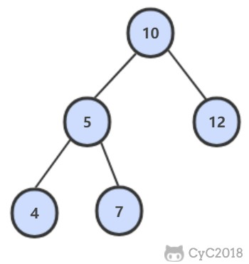
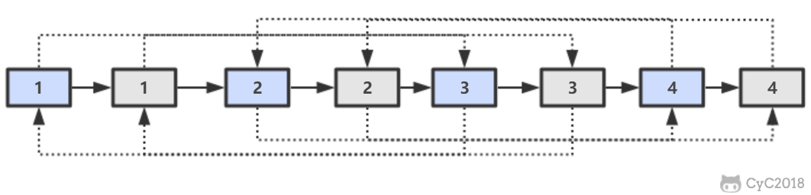
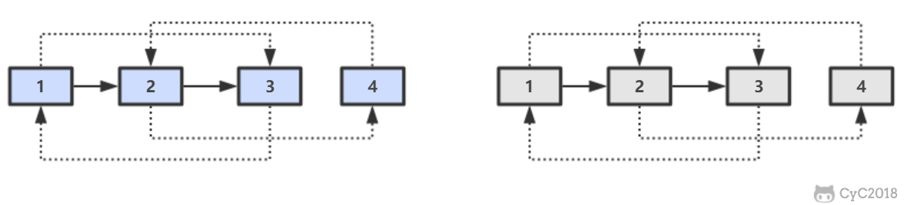

30. 包含 min 函数的栈 NowCoder
题目描述 定义栈的数据结构，请在该类型中实现一个能够得到栈最小元素的 min 函数。
解题思路 1 2 3 4 5 6 7 8 9 10 11 12 13 14 15 16 17 18 19 20 private Stack<Integer> dataStack = new Stack<>();private Stack<Integer> minStack = new Stack<>();public void push (int node) dataStack.push(node); minStack.push(minStack.isEmpty() ? node : Math.min(minStack.peek(), node)); } public void pop () dataStack.pop(); minStack.pop(); } public int top () return dataStack.peek(); } public int min () return minStack.peek(); }
31. 栈的压入、弹出序列 NowCoder
题目描述 输入两个整数序列，第一个序列表示栈的压入顺序，请判断第二个序列是否为该栈的弹出顺序。假设压入栈的所有数字均不相等。
例如序列 1,2,3,4,5 是某栈的压入顺序，序列 4,5,3,2,1 是该压栈序列对应的一个弹出序列，但 4,3,5,1,2 就不可能是该压栈序列的弹出序列。
解题思路 使用一个栈来模拟压入弹出操作。
1 2 3 4 5 6 7 8 9 10 11 12 13 public boolean IsPopOrder (int [] pushSequence, int [] popSequence) int n = pushSequence.length; Stack<Integer> stack = new Stack<>(); for (int pushIndex = 0 , popIndex = 0 ; pushIndex < n; pushIndex++) { stack.push(pushSequence[pushIndex]); while (popIndex < n && !stack.isEmpty() && stack.peek() == popSequence[popIndex]) { stack.pop(); popIndex++; } } return stack.isEmpty(); }
32.1 从上往下打印二叉树 NowCoder
题目描述 从上往下打印出二叉树的每个节点，同层节点从左至右打印。
例如，以下二叉树层次遍历的结果为：1,2,3,4,5,6,7
解题思路 使用队列来进行层次遍历。
不需要使用两个队列分别存储当前层的节点和下一层的节点，因为在开始遍历一层的节点时，当前队列中的节点数就是当前层的节点数，只要控制遍历这么多节点数，就能保证这次遍历的都是当前层的节点。
1 2 3 4 5 6 7 8 9 10 11 12 13 14 15 16 17 public ArrayList<Integer> PrintFromTopToBottom (TreeNode root) Queue<TreeNode> queue = new LinkedList<>(); ArrayList<Integer> ret = new ArrayList<>(); queue.add(root); while (!queue.isEmpty()) { int cnt = queue.size(); while (cnt-- > 0 ) { TreeNode t = queue.poll(); if (t == null ) continue ; ret.add(t.val); queue.add(t.left); queue.add(t.right); } } return ret; }
32.2 把二叉树打印成多行 NowCoder
题目描述 和上题几乎一样。
解题思路 1 2 3 4 5 6 7 8 9 10 11 12 13 14 15 16 17 18 19 20 ArrayList<ArrayList<Integer>> Print(TreeNode pRoot) { ArrayList<ArrayList<Integer>> ret = new ArrayList<>(); Queue<TreeNode> queue = new LinkedList<>(); queue.add(pRoot); while (!queue.isEmpty()) { ArrayList<Integer> list = new ArrayList<>(); int cnt = queue.size(); while (cnt-- > 0 ) { TreeNode node = queue.poll(); if (node == null ) continue ; list.add(node.val); queue.add(node.left); queue.add(node.right); } if (list.size() != 0 ) ret.add(list); } return ret; }
32.3 按之字形顺序打印二叉树 NowCoder
题目描述 请实现一个函数按照之字形打印二叉树，即第一行按照从左到右的顺序打印，第二层按照从右至左的顺序打印，第三行按照从左到右的顺序打印，其他行以此类推。
解题思路 1 2 3 4 5 6 7 8 9 10 11 12 13 14 15 16 17 18 19 20 21 22 23 24 public ArrayList<ArrayList<Integer>> Print(TreeNode pRoot) { ArrayList<ArrayList<Integer>> ret = new ArrayList<>(); Queue<TreeNode> queue = new LinkedList<>(); queue.add(pRoot); boolean reverse = false ; while (!queue.isEmpty()) { ArrayList<Integer> list = new ArrayList<>(); int cnt = queue.size(); while (cnt-- > 0 ) { TreeNode node = queue.poll(); if (node == null ) continue ; list.add(node.val); queue.add(node.left); queue.add(node.right); } if (reverse) Collections.reverse(list); reverse = !reverse; if (list.size() != 0 ) ret.add(list); } return ret; }
33. 二叉搜索树的后序遍历序列 NowCoder
题目描述 输入一个整数数组，判断该数组是不是某二叉搜索树的后序遍历的结果。假设输入的数组的任意两个数字都互不相同。
例如，下图是后序遍历序列 1,3,2 所对应的二叉搜索树。
解题思路 1 2 3 4 5 6 7 8 9 10 11 12 13 14 15 16 17 18 public boolean VerifySquenceOfBST (int [] sequence) if (sequence == null || sequence.length == 0 ) return false ; return verify(sequence, 0 , sequence.length - 1 ); } private boolean verify (int [] sequence, int first, int last) if (last - first <= 1 ) return true ; int rootVal = sequence[last]; int cutIndex = first; while (cutIndex < last && sequence[cutIndex] <= rootVal) cutIndex++; for (int i = cutIndex; i < last; i++) if (sequence[i] < rootVal) return false ; return verify(sequence, first, cutIndex - 1 ) && verify(sequence, cutIndex, last - 1 ); }
34. 二叉树中和为某一值的路径 NowCoder
题目描述 输入一颗二叉树和一个整数，打印出二叉树中结点值的和为输入整数的所有路径。路径定义为从树的根结点开始往下一直到叶结点所经过的结点形成一条路径。
下图的二叉树有两条和为 22 的路径：10, 5, 7 和 10, 12

解题思路 1 2 3 4 5 6 7 8 9 10 11 12 13 14 15 16 17 18 19 20 private ArrayList<ArrayList<Integer>> ret = new ArrayList<>();public ArrayList<ArrayList<Integer>> FindPath(TreeNode root, int target) { backtracking(root, target, new ArrayList<>()); return ret; } private void backtracking (TreeNode node, int target, ArrayList<Integer> path) if (node == null ) return ; path.add(node.val); target -= node.val; if (target == 0 && node.left == null && node.right == null ) { ret.add(new ArrayList<>(path)); } else { backtracking(node.left, target, path); backtracking(node.right, target, path); } path.remove(path.size() - 1 ); }
35. 复杂链表的复制 NowCoder
题目描述 输入一个复杂链表（每个节点中有节点值，以及两个指针，一个指向下一个节点，另一个特殊指针指向任意一个节点），返回结果为复制后复杂链表的 head。
1 2 3 4 5 6 7 8 9 public class RandomListNode int label; RandomListNode next = null ; RandomListNode random = null ; RandomListNode(int label) { this .label = label; } }
解题思路 第一步，在每个节点的后面插入复制的节点。
第二步，对复制节点的 random 链接进行赋值。

第三步，拆分。

1 2 3 4 5 6 7 8 9 10 11 12 13 14 15 16 17 18 19 20 21 22 23 24 25 26 27 28 29 public RandomListNode Clone (RandomListNode pHead) if (pHead == null ) return null ; RandomListNode cur = pHead; while (cur != null ) { RandomListNode clone = new RandomListNode(cur.label); clone.next = cur.next; cur.next = clone; cur = clone.next; } cur = pHead; while (cur != null ) { RandomListNode clone = cur.next; if (cur.random != null ) clone.random = cur.random.next; cur = clone.next; } cur = pHead; RandomListNode pCloneHead = pHead.next; while (cur.next != null ) { RandomListNode next = cur.next; cur.next = next.next; cur = next; } return pCloneHead; }
36. 二叉搜索树与双向链表 NowCoder
题目描述 输入一棵二叉搜索树，将该二叉搜索树转换成一个排序的双向链表。要求不能创建任何新的结点，只能调整树中结点指针的指向。
解题思路 1 2 3 4 5 6 7 8 9 10 11 12 13 14 15 16 17 18 19 20 private TreeNode pre = null ;private TreeNode head = null ;public TreeNode Convert (TreeNode root) inOrder(root); return head; } private void inOrder (TreeNode node) if (node == null ) return ; inOrder(node.left); node.left = pre; if (pre != null ) pre.right = node; pre = node; if (head == null ) head = node; inOrder(node.right); }
37. 序列化二叉树 NowCoder
题目描述 请实现两个函数，分别用来序列化和反序列化二叉树。
解题思路 1 2 3 4 5 6 7 8 9 10 11 12 13 14 15 16 17 18 19 20 21 22 23 24 25 26 27 private String deserializeStr;public String Serialize (TreeNode root) if (root == null ) return "#" ; return root.val + " " + Serialize(root.left) + " " + Serialize(root.right); } public TreeNode Deserialize (String str) deserializeStr = str; return Deserialize(); } private TreeNode Deserialize () if (deserializeStr.length() == 0 ) return null ; int index = deserializeStr.indexOf(" " ); String node = index == -1 ? deserializeStr : deserializeStr.substring(0 , index); deserializeStr = index == -1 ? "" : deserializeStr.substring(index + 1 ); if (node.equals("#" )) return null ; int val = Integer.valueOf(node); TreeNode t = new TreeNode(val); t.left = Deserialize(); t.right = Deserialize(); return t; }
38. 字符串的排列 NowCoder
题目描述 输入一个字符串，按字典序打印出该字符串中字符的所有排列。例如输入字符串 abc，则打印出由字符 a, b, c 所能排列出来的所有字符串 abc, acb, bac, bca, cab 和 cba。
解题思路 1 2 3 4 5 6 7 8 9 10 11 12 13 14 15 16 17 18 19 20 21 22 23 24 25 26 27 28 private ArrayList<String> ret = new ArrayList<>();public ArrayList<String> Permutation (String str) if (str.length() == 0 ) return ret; char [] chars = str.toCharArray(); Arrays.sort(chars); backtracking(chars, new boolean [chars.length], new StringBuilder()); return ret; } private void backtracking (char [] chars, boolean [] hasUsed, StringBuilder s) if (s.length() == chars.length) { ret.add(s.toString()); return ; } for (int i = 0 ; i < chars.length; i++) { if (hasUsed[i]) continue ; if (i != 0 && chars[i] == chars[i - 1 ] && !hasUsed[i - 1 ]) continue ; hasUsed[i] = true ; s.append(chars[i]); backtracking(chars, hasUsed, s); s.deleteCharAt(s.length() - 1 ); hasUsed[i] = false ; } }
39. 数组中出现次数超过一半的数字 NowCoder
解题思路 多数投票问题，可以利用 Boyer-Moore Majority Vote Algorithm 来解决这个问题，使得时间复杂度为 O(N)。
使用 cnt 来统计一个元素出现的次数，当遍历到的元素和统计元素相等时，令 cnt++，否则令 cnt--。如果前面查找了 i 个元素，且 cnt == 0，说明前 i 个元素没有 majority，或者有 majority，但是出现的次数少于 i / 2 ，因为如果多于 i / 2 的话 cnt 就一定不会为 0 。此时剩下的 n - i 个元素中，majority 的数目依然多于 (n - i) / 2，因此继续查找就能找出 majority。
1 2 3 4 5 6 7 8 9 10 11 12 13 14 15 public int MoreThanHalfNum_Solution (int [] nums) int majority = nums[0 ]; for (int i = 1 , cnt = 1 ; i < nums.length; i++) { cnt = nums[i] == majority ? cnt + 1 : cnt - 1 ; if (cnt == 0 ) { majority = nums[i]; cnt = 1 ; } } int cnt = 0 ; for (int val : nums) if (val == majority) cnt++; return cnt > nums.length / 2 ? majority : 0 ; }